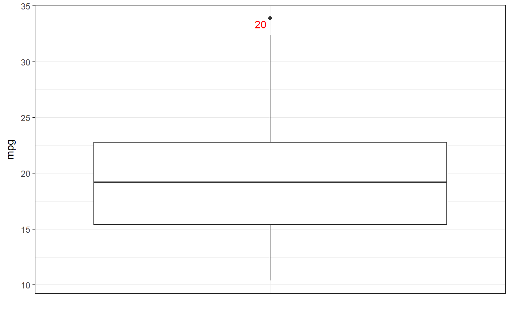

Box plot using ggplot
This function provides a simple interface to create a ggplot box plot, organising different boxplots by levels of a factor is desired, and showing row numbers of outliers.
ggBoxplot(dat, y = NULL, x = NULL, labelOutliers = TRUE, outlierColor = "red", theme = theme_bw(), ...)
Arguments
| dat | Either a vector of values (to display in the box plot) or a dataframe containing variables to display in the box plot. |
|---|---|
| y | If |
| x | If |
| labelOutliers | Whether or not to label outliers. |
| outlierColor | If labeling outliers, this is the color to use. |
| theme | The theme to use for the box plot. |
| … | Any additional arguments will be passed to |
Details
This function is based on JasonAizkalns' answer to a question on Stack Exchange (Cross Validated; see http://stackoverflow.com/questions/33524669/labeling-outliers-of-boxplots-in-r).
Value
A ggplot plot is returned.
See also
geom_boxplot
Examples
### A box plot for miles per gallon in the mtcars dataset: ggBoxplot(mtcars$mpg);### And separate for each level of 'cyl' (number of cylinder): ggBoxplot(mtcars, y='mpg', x='cyl');